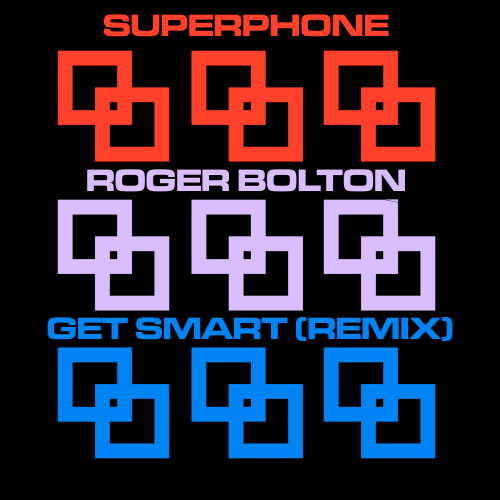

|


|
 Welcome! Welcome!
You've reached the official Superphone
Webzone!
Providers of vague online entertainment
for upwards of several years!
What Is Superphone?
Superphone is a New-Wavey Synthpop band
from Columbus, Ohio.
We take a mix of crunchy samples,
Midwest Synthesis, and unique, unorthodox, and otherwise unpalatable
sounds and shove them in the musical food processor. Creating a rich,
creamy, blend of new and old.
|
Latest
Release |
What's New? |
Today's
Prediction |
|
 |
8-4-26
Exciting news; 2 new
shows have been added to the live page; Chicago IL at VCFMW on Sept 12th
and Cleveland, OH at DEVOtional on the 6th or 7th. Head on over to learn
more and get your tickets now!. |
Loading today's prediction...
|
|
Latest Video |
Soup
of the Week: |
 |
Klattsch
Klattsch is an
online speech synthesizer made by my friend Tony. It's styled after
speech chips from the 1980s and can even sing!
Available online or on IOS/Android |
|